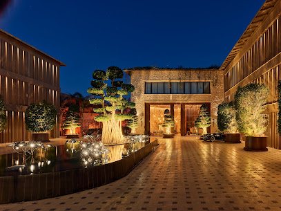
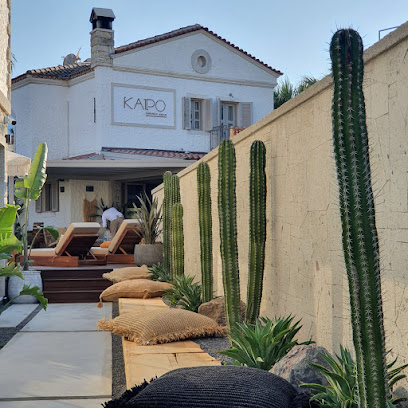
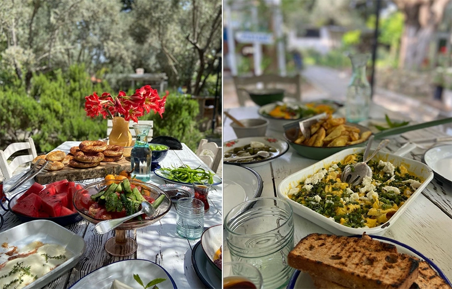
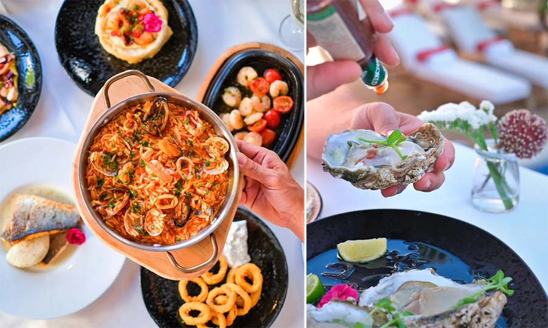

Contact
Alacati, Izmir, Turkey
Reach Us
Email: info@bestwavessurfclub.com
Phone: +90 (537) 2416862
Address: Best Waves Surfing Club, Alacati, Izmir, Turkey
Find Us

Click the map icon to open in Google Maps.
Travel Information
Alacati is easily accessible from Izmir Adnan Menderes Airport (ADB).
Flights:
- Check flights on Skyscanner
- Check flights on Google Flights
- Check flights on Kayak
Getting to Alacati from the Airport:
- Havas Shuttle: A convenient and affordable option.
- Taxi: Readily available at the airport.
- Car Rental: Several rental agencies operate at the airport.
Where to Stay & Eat
Alacati has blossomed into a sought-after coastal haven, renowned for its diverse accommodation, from budget-friendly hostels to luxurious five-star hotels. The village center is particularly charming, with picturesque stone house boutique hotels offering an authentic local experience. And for those seeking adventure, our surf center provides convenient hourly shuttles to and from the heart of Alacati, allowing you to easily explore the vibrant town and its cobbled streets.
Biblos Resort Alacati
Elegant rooms, some with sea views, at this luxury beachfront resort with spa, outdoor pool and restaurant.
Kaipo Alacati
The facility's comfortable accommodation units ensure a pleasant time.
Salkim Sogut Alacati
This restaurant offers an amazing experience with its incredible and surprising flavors. It's a treasure that serves rare and unique tastes.
Sota Alacati
Sota, one of Alacati's best seafood restaurants in Viento Hotel, offers lunch and dinner menus, a rich selection of cocktails and wines, and a sushi menu prepared by Asian chefs. It provides a delightful gastronomic experience with fresh appetizers, salads, and enjoyable music.
